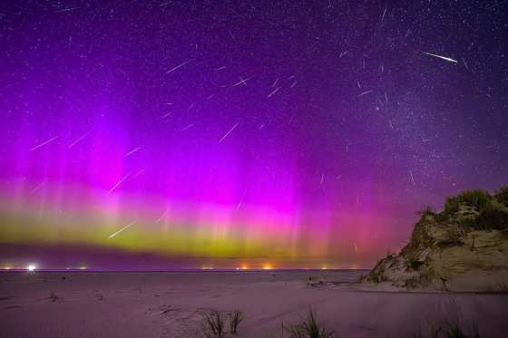
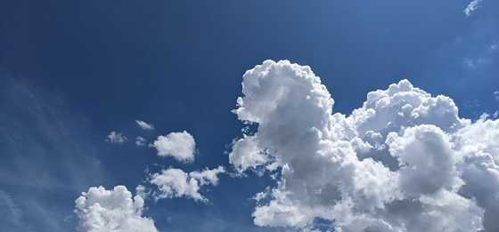
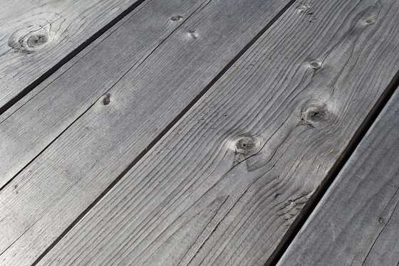
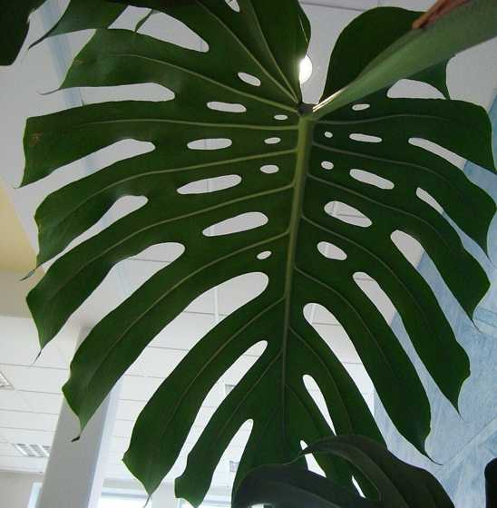
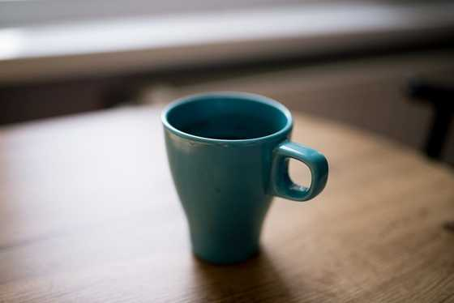
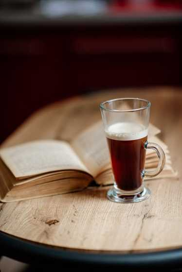
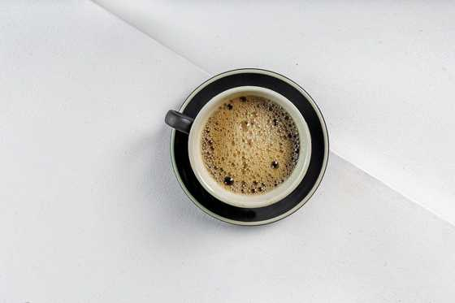
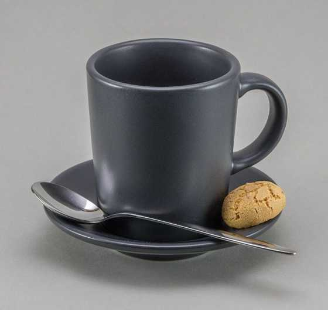
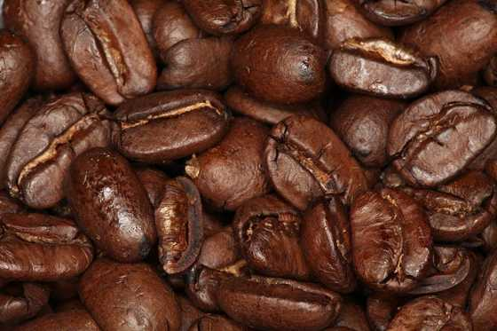
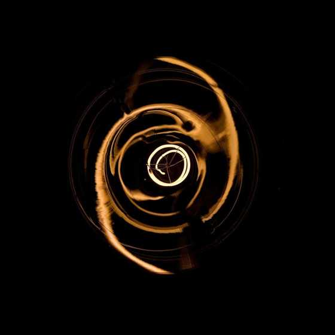

CAFE / 熊本県天草市佐伊津町
Space かるでら
山と海をひとまなざしに、靴を脱いで過ごす、木の家のカフェ。
ABOUT
お店の由来・想い
「Space かるでら」は、民家を改装した木造のカフェです。店内は木材をふんだんに使い、靴を脱いで上がります。奥の大きな窓からは海や田園風景、晴れた日には雲仙普賢岳を望むことができ、天井は吹き抜けになっているそうです。
店主の石原さんは、楽しく好きなようにお店を営んでいる方として紹介されています。常連のお客さんが持ち寄った小物が少しずつ増え、店内の小物や焼物には購入できるものもあります。季節ごとの飾りつけも楽しみのひとつです。
窓の外に広がる景色と、ゆっくり流れる時間そのものを楽しむ「空間(Space)」。その居心地のよさを軸に、このページを作りました。
店名の由来は確認できていません。上の「空間」という読み方は制作側のイメージです。情報は過去の紹介記事に基づくため、最新の状況はお店にご確認ください。




MENU
メニュー・提供内容
紹介記事によると、コーヒー・ハーブティー・紅茶などのドリンクと、季節のフルーツをのせた「本日のケーキ」が中心です。事前に連絡すると単品料理(サンドイッチやパスタなど)を用意してもらえたとの情報もあります。メニューは店主の好みで変わります。
営業時間・定休日・電話番号: 準備中






VOICE
口コミ(イメージ例)
窓の向こうの山と海を眺めながら、ゆっくりコーヒーをいただきました。時間を忘れます。
木の香りのする店内で、靴を脱いでくつろげるのがうれしい。ケーキも優しい味でした。
ドライブの途中に立ち寄りました。小物を眺めているだけでも楽しいお店です。
上記は制作側が作成したイメージ例で、実在のお客様の声ではありません。
ACCESS
アクセス
| 所在地 | 〒863-2171 熊本県天草市佐伊津町1426-7 |
|---|---|
| 電話 | 準備中 |
| 営業時間 | 準備中 |
| 定休日 | 準備中 |
| SNS | Instagram @space__karudera |
